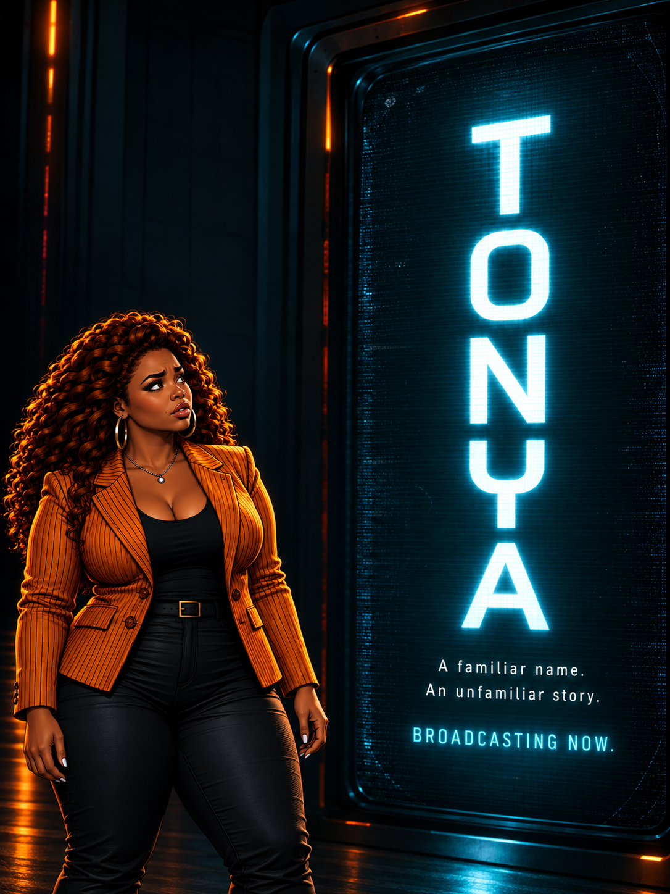

She-Sci original · Sci-fi microseriesTonya
Watch now“What if the name of someone you know appeared on a channel, and the TV showed you something you didn't know about them?”
Tonya’s television starts showing her things it shouldn't know. Each new name raises the stakes—until the final episode reveals why it is happening.
5 episodesMicroseriesPrototype complete
Watch episodes 1–5 on YouTube (opens in a new tab)